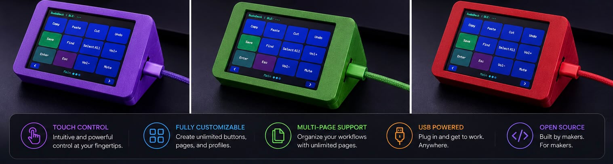

SUDODECK
The only wireless, open source macro deck — built in South Africa.
Pair via Bluetooth. Configure from any browser. No subscriptions. No compromises.
The only wireless, open source macro deck — built in South Africa.
Pair via Bluetooth. Configure from any browser. No subscriptions. No compromises.
It's a wireless macro deck that sits next to your keyboard — a handful of physical buttons you can program to do anything. Press one button to type your email address. Another to launch Spotify. A third to run a ten-step macro that opens your dev environment, pulls the latest code, and starts the build. All with one tap.
No software to install. No cloud accounts. No subscriptions. It speaks Bluetooth HID — your computer sees a real keyboard. Configure everything from your browser, then unplug and move between machines. Your layout follows.
I couldn't afford the tool I wanted, so I built my own. Then I shared the code, the designs, and the firmware for free — not so you could copy what I made, but so you could see what's possible. You don't need permission to create. You don't need a team to begin. You just need the courage to start. If a guy in a small town with a soldering iron can ship a product, imagine what you can build.
— Shahid
Real workflows. One tap each. These are just the start — every button is yours to program.
Never tab out of your stream again. Switch scenes, cut cameras, and manage audio — all from a wireless deck next to your keyboard. Each button is a hotkey mapped to OBS or Streamlabs.
/raid channelname in chat and hit Enter — keeps the hype going without missing a beat.
Stop hunting keyboard shortcuts. Dedicate a full page of buttons to your NLE — cut, ripple delete, zoom, split, and export without touching the keyboard. Add a second page for colour grading.
Execute perfect MMO rotations, toggle sim racing pit controls, and manage Discord — all without breaking immersion. Macros chain multiple actions with precise timing.
Stop typing the same things every day. Launch apps, paste canned responses, insert your signature, and automate your morning routine — all with one tap.
Keep your hands on your instrument, not your keyboard. Control Ableton, FL Studio, or any DAW from anywhere in the room — wireless range covers the whole studio.
Keep your git commands, code snippets, and build actions one tap away. No more context-switching — commit, push, deploy, and run from your deck.
Stop hunting keyboard shortcuts. Dedicate a full page of buttons to your NLE — cut, ripple delete, zoom, split, and export without touching the keyboard. Add a second page for colour grading.
Execute perfect MMO rotations, toggle sim racing pit controls, and manage Discord — all without breaking immersion. Macros chain multiple actions with precise timing.
Stop typing the same things every day. Launch apps, paste canned responses, insert your signature, and automate your morning routine — all with one tap.
Keep your hands on your instrument, not your keyboard. Control Ableton, FL Studio, or any DAW from anywhere in the room — wireless range covers the whole studio.
Keep your git commands, code snippets, and build actions one tap away. No more context-switching — commit, push, deploy, and run from your deck.
This is just the beginning. Every button does whatever you want —
key, combo, text, macro, app launcher, or automation.

See how SudoDeck stacks up against the competition.
| SudoDeck | Stream Deck Mini | Stream Deck MK.2 | |
|---|---|---|---|
| Price (SA) | R1,099 | R1,799 | ~R2,800 |
| Price per button | ~R55 | R300 | ~R187 |
| Connection | BLE Wireless | USB Wired | USB Wired |
| Bluetooth Range | ~10m | Cable length | Cable length |
| Dimensions | 8.5 × 5 × 3.3 cm | — | — |
| Display | 2.8" colour touch | 6 LCD buttons | 15 LCD buttons |
| Resolution | 320 × 240 | 96 × 96 each | 96 × 96 each |
| Touch Screen | Yes ✓ | ✗ | ✗ |
| Buttons | 20+ touch (multi-page) | 6 fixed | 15 fixed |
| Pages | Up to 18 | 1 | 1 |
| Open Source | MIT ✓ | ✗ | ✗ |
| Config Software | Built-in web page | Proprietary app | Proprietary app |
| Web Serial Config | Yes — no install | ✗ | ✗ |
| Config on Device | Yes ✓ | ✗ | ✗ |
| Export / Import JSON | Yes ✓ | ✗ | ✗ |
| Firmware Updates | Via browser | Proprietary app | Proprietary app |
| App Launcher | Yes ✓ | ✗ | ✗ |
| Macro Sequences | Yes ✓ | ✗ | Basic |
| Automations | Timers & Schedules | ✗ | ✗ |
| Custom Live Widgets | Yes ✓ | ✗ | ✗ |
| WiFi | Built-in ✓ | ✗ | ✗ |
| Screensaver | 3 modes | None | None |
| Built In | South Africa | Imported | Imported |
SudoDeck is the only wireless, open source macro deck on the market — at nearly half the price of the nearest competitor. Plus you're supporting local.
cheap. open. yours. — A wireless macro deck built on ESP32.
Pair over Bluetooth, configure from your browser. R1,099 in SA. Open source.
Macro decks shouldn't cost a hundred dollars. Affordable tech is a right, not a privilege. SudoDeck is our answer — open hardware and open software that anyone can build, modify, and own.
All configuration stays on the device. No cloud sync, no accounts, no telemetry. When you unplug SudoDeck, your layout follows — because it never left.
MIT licensed. The firmware, the website, the config tool — everything is public. Fork it, hack it, build something new.
Single keys, key combos, text strings, macro sequences — every button does what you want. No restrictions, no paid upgrades.
built by Shahid Singh